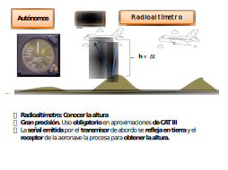

Sistema de Navegación Aérea
* * *
Tecnología Aeroespacial
Universidad de León
a.gutierrez@unileon.es
Contenidos
- Concepto de navegación
- Programación de vuelo y rutas
- Definición y tipos de ruta de vuelo
- Representación de rutas
- Programación de vuelo
- Posicionamiento
- VOR convencional o CVOR / VOR Doppler o DVOR
- ILS
- DME
- Autónomos
- Sistema de Navegación Inercial: INS
- Radioaltímetro
- Navegación por Satélite
- Guiado
- Guiado y control
- Tipos de guiado
- Gestión del tráfico
- Componentes de la gestión del tráfico aéreo
- Identificación de conflictos
- Método Visual
- Instrumentos dependientes/independientes
- Bibliografía
Concepto de navegación
Proceso de supervisión y control del movimiento de una aeronave de un lugar a otro [1]. No es suficiente con llegar, esto se debe lograr sin perderse, respetando las leyes de vuelo de la aeronave y sin poner en peligro las personas/mercancias.
1. Definición de la ruta (plan de vuelo).
2. Posicionamiento respecto a la ruta objetivo.
3. Corregir Posición.
Definición de rutas
La ruta no queda determinada solo por los puntos de origen y destino de la misma. Dependiendo de diversos factores como los costes, tiempo, consumo, seguridad, impacto ambiental... adquirirá unas determinadas características espacio-temporales.
Tres participantes:
1. Piloto.
2. Agentes de Control del tráfico Aéreo.
3. Operador Aéreo.
Tipos de rutas
Rutas normalizadas de salida (SID): Procedimientos de navegación desde que el avión despega hasta alcanzar la fase de vuelo "en ruta"
Rutas ATS o aerovías : Distintas en función del espacio aéreo inferior (hasta FL 245) o superior (>FL245). Suelen ser segmentos que unen radio-ayuda o puntos de la ruta definidos por sus coordenadas.
Rutas normalizadas de llegada (STAR): Fase final de la ruta, hasta el punto inicial de aproximación instrumental (IAF)
Aproximación instrumental: Procedimientos que van desde el IAF hasta el aterrizaje o aproximación frustrada. Dividido en fases inicial, intermedia y final, con la posibilidad de un cuarto segmento de aproximación frustrada.
Plan de vuelo
Según AENA, se establece la obligación de presentar un plan de vuelo en los siguientes casos:
1) Cualquier vuelo o parte del mismo al que tenga que prestarse servicio de control de tránsito aéreo;
2) Cualquier vuelo IFR dentro del espacio aéreo con servicio de asesoramiento;
3) Cualquier vuelo dentro de áreas, hacia áreas, o a lo largo de rutas designadas por la autoridad competente para facilitar el suministro de servicios de información de vuelo, de alerta y de búsqueda y salvamento;
4) Cualquier vuelo dentro de áreas, hacia áreas, o a lo largo de rutas designadas por la autoridad competente para facilitar la coordinación con las dependencias militares o con las dependencias de los servicios de tránsito aéreo competentes en Estados adyacentes, a fin de evitar la posible necesidad de interceptación para fines de identificación;
5) Cualquier vuelo a través de fronteras internacionales, amenos que los Estados interesados prescriban otra cosa;
6) Cualquier vuelo nocturno, si sale de las proximidades de un aeródromo.
Plan de vuelo

Debe contener la siguiente información:
Identificación de aeronave
Reglas de vuelo y tipo de vuelo
Número y tipos de aeronaves y categoría de estela turbulenta
Equipo
Aeródromo de salida
Hora prevista de fuera calzos
Velocidades de crucero
Niveles de crucero
Ruta que ha de seguirse
Aeródromo de destino y duración total prevista
Aeródromos de alternativa
Autonomía
Número total de personas a bordo
Equipo de emergencia y de supervivencia
Otros datos.
Medidas de calidad
Para medir la calidad de los equipos y sistemas de navegación aérea se definen cuatro conceptos importante:
1. Exactitud: Las medidas realizadas deben de estar situadas en unos límites adecuados de tolerancia
2. Integridad: Cuando las mediciones se encuentran fuera de los límites de tolerancia, el sistema ha de ser capaz de advertirlos.
3. Continuidad de servicio: Las medidas no deben dejar de estar disponibles de manera repentina durante el tiempo de operación
4. Disponibilidad: La medidas pueden estar disponibles en el tiempo de operación.

Guiado de la aeronave


Requisitos de los tipos de navegación
| Funciones que componen la navegación | Requisitos mínimos para los diferentes tipos de navegación | ||
| 2D | 3D | 4D | |
| Definición de la ruta | Latitud, longitud | Latitud, longitud y altura | Latitud, longitud, altura y tiempo |
| Posicionamiento | Desviación lateral | Desviación lateral y vertical | Desviación lateral, vertical y longitudinal |
| Guiado | Control lateral (LNAV) | Control lateral, control vertical (VNAV) | Control lateral, vertical y de velocidad |
International Civil Aviation Organization (ICAO)
Conferencia internacional organizada en Chicago. Asistieron un total de 54 paises, del 1 de noviembre hasta el 7 de diciembre. Se firmó el denominado Convenio Internacional de la Aviación Civil con el objetivo de crear la OACI.
- Anexo 5 Unidades de Medida
- Anexo 6 Operación de aeronaves
- Anexo 8 Aeronavegavilidad
- Anexo 10 Telecomunicaciones aeronaúticas
- Anexo 11 Servicios de tránsito aéreo
- Anexo 14 Aeródromos
- Anexo 15 Servicios información aeronáutica
- Anexo 16 Protección del medio ambiente
- (... hasta 19)

Bibliografía
- Navegación Aérea. Posicionamiento, Guiado y Gestión del Tráfico Aéreo Francisco Javier Sáez Nieto. Garceta
- Introducción al Sistema de Navegación AéreaPérez Sanz, L., Arnaldo Valdés, R. M., Saéz Nieto, F. J., Blanco Monge, j., & Gómez Comendador, V. F
- Airport Engineering, Planning, Desing and Development of 21st Century AirportsAshford, N., Mumayiz, S., & Wright, P.